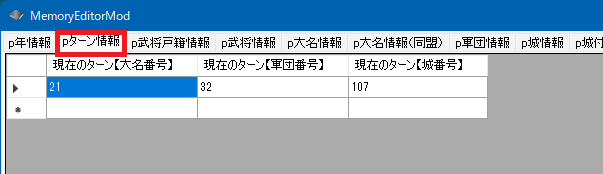

戦略.ターンとは、戦略画面の大名ターンもしくは軍団ターンのことです。
城ターンもあります。
「現在ターンが回っている大名」「ターンが回っている軍団」
あるいは「ターンが回ってきている城」を簡単に得ることが出来るよう、「pターン情報」が提供されています。

pターン情報.現在のターン【大名番号】
pターン情報.現在のターン【軍団番号】
void カスタム::On_プレイヤ担当ターン《メイン画面》() {
int iDaimyoID = pターン情報.現在のターン【大名番号】 - 1;
int iGundanID = pターン情報.現在のターン【軍団番号】 - 1;
if (0 <= iDaimyoID && iDaimyoID < 最大数::大名情報::配列数) {
int iBushouID = p大名情報[iDaimyoID].大名【武将番号】-1;
if (0 <= iBushouID && iBushouID < 最大数::武将情報::配列数) {
デバッグ出力 << "大名:" << Get_名字(iBushouID) << Get_名前(iBushouID) << endl;
}
}
if (0 <= iGundanID && iGundanID < 最大数::軍団情報::配列数) {
int iBushouID = p軍団情報[iGundanID].軍団長【武将番号】 - 1;
if (0 <= iGundanID && iGundanID < 最大数::武将情報::配列数) {
デバッグ出力 << "第" << (int)p軍団情報[iGundanID].軍団割当番号 << "軍団" << "の軍団長:" << Get_名字(iBushouID) << Get_名前(iBushouID) << endl;
int iCastleID = p軍団情報[iGundanID].所属居城【城番号】-1;
デバッグ出力 << "城:" << Get_城名(iCastleID) << Get_城称(iCastleID) << endl;
}
}
/* On_プレイヤ担当ターン《メイン画面》 では切り替わり目なので、以下のような城ターンは機能しない
int iGundanID = pターン情報.現在のターン【城番号】 - 1;
if (0 <= iCastleID && iCastleID < 最大数::城情報::配列数) {
デバッグ出力 << Get_城名(iCastleID) << Get_城称(iCastleID) << endl;
}
*/
}
「On_プレイヤ担当ターン《メイン画面》()」と「On_軍団ターン変更《メイン画面》()」は、切り替わりい直後のメソッドとなるため、城ターンの情報がまだ更新されていません。
しかし、軍団番号や大名番号から、簡単に所属している居城の番号が得られますので、そちらの手段で取得してください。
void カスタム::On_軍団ターン変更《メイン画面》(int 軍団番号) {
int iGundanID = 軍団番号 - 1;
if (0 <= iGundanID && iGundanID < 最大数::軍団情報::配列数) {
int iBushouID = p軍団情報[iGundanID].軍団長【武将番号】 - 1;
if (0 <= iGundanID && iGundanID < 最大数::武将情報::配列数) {
デバッグ出力 << "第" << (int)p軍団情報[iGundanID].軍団割当番号 << "軍団" << "の軍団長:" << Get_名字(iBushouID) << Get_名前(iBushouID) << endl;
int iCastleID = p軍団情報[iGundanID].所属居城【城番号】 - 1;
デバッグ出力 << "城:" << Get_城名(iCastleID) << Get_城称(iCastleID) << endl;
}
}
/* On_軍団ターン変更《メイン画面》 では切り替わり目なので、以下のような城ターンは機能しない
int iGundanID = pターン情報.現在のターン【城番号】 - 1;
if (0 <= iCastleID && iCastleID < 最大数::城情報::配列数) {
デバッグ出力 << Get_城名(iCastleID) << Get_城称(iCastleID) << endl;
}
*/
}
「大名ターン」と「大名ターン」の「間」など、「どの軍団のターンでもない」といった状態は頻繁に発生します。
そういった場合、ターン軍団番号やターン大名番号には「0xFFFF」が入った状態となります。
なお、戦争をしている間は「戦争を仕掛けた軍団の行動」ですから、
戦争をしかけた軍団の「戦略ターン」に含まれます。
「メイン画面 - 戦略ターン」に関する主な所は以上となります。 詳しくは「ターン情報型.h」などを参照してください。